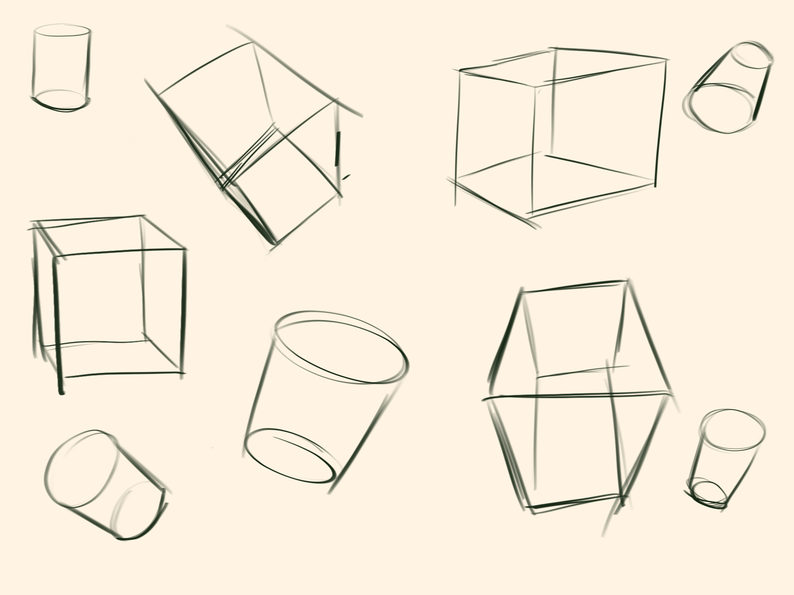
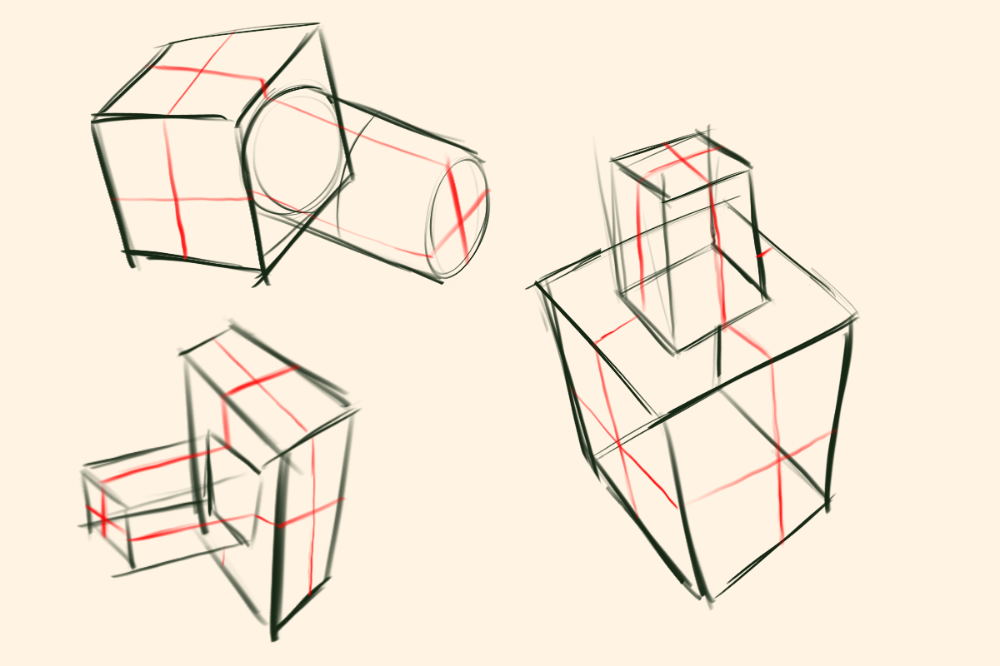
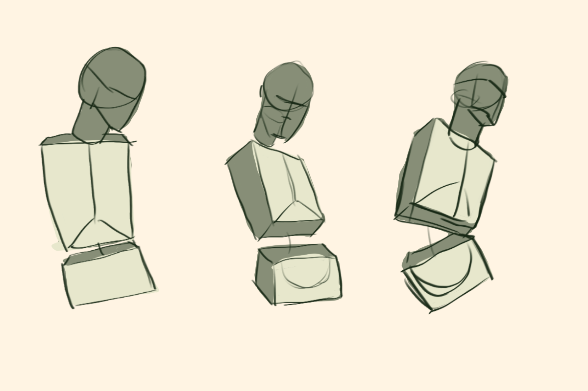

Lines & Shapes: The Building Blocks of Drawing
Every drawing starts with something simple! Whether you're sketching a
person or animal, lines and shapes are the building blocks of every drawing. The important
thing to remember, is that all things can be simplified into basic shapes and lines.
One of the most useful skills for a beginer is learning to simplify complicated objects
into basic shapes. A box, a cylinder, or a circle might not seem like much on its own,
but these shapes are the foundation to creating more complex drawings.
In this section, we'll explore how to draw basic three-dimensional forms, combine them
into more complex structures, and use them as a foundation for drawing simple torsos!
Remember:
Your sketches don't need to be perfect! Construction lines, overlapping shapes
and small mistakes are all part of learning to draw
Exercise 1: Cylinders & Cubes
Before combining shapes, it's important to practice drawing them individually. Cubes and cylinders
are great starting points because you can build most forms only using those shapes. start by drawing
cylinders and cubes from different angles, and trying to rotate them in space on the page.
as you practice, pay attention to how the edges, curves, and proportions change depending on the angle.
the more you practice, the more you'll be able to visualize and draw them from any angle!

Exercise 2: Combining Shapes
Once you're comfortable with drawing individual shapes, it's time to start connecting them
to create more complex shapes. I promise, it's not anything crazy! It's a little tricky at first,
but as you practice, you'll start to get a lot more consistent with your shapes and how they connect. If
you have a hard time visualizing them you can copy the shapes from my reference image below or ones online!
Once you're able to combine shapes, you'll be able to start using that foundation to build more complex and
fun drawings like people and your favorite characters!

Exercise 3: Drawing Torsos
Now, before you freak out, remember that everything starts off as a basic shape! Below I provided a couple
of examples of how you can simplify a human torso using cubes and cylinders. What I want you to do here is find
some reference images of people online in different poses and try to simplify their torsos into basic shapes.
To make this more fun, you can also use references from your favorite movies or video games! find a cool pose
you want to try and simplify and add it your preferred drawing software of your choice (or you can print out the image
and draw on top of it using a light box or window!) and trace over it! The key here is to not copy the image, it's to
find the shapes that make up the torso and simplify them into basic shapes. Once you feel more comfortable, you
can start to draw them without tracing them or even use a refernce at all! The ultimate goal here is to be able to visualize
the shapes in your head and draw them out! That's how you start to build your mental library of shapes and references
to use when inventing your own poses and characters. Give it a try!

Keep Building Your Skills!
Learning to draw takes practice, so don't feel discouraged if your shapes don't look quite right at first,
that's what these exercises are for! If you practice evryday, even for five minutes, you'll start to see gradual
progress! Even if they're not perfect right now, you'll start to become more confident and consistent with your lines
and shapes the more draw. Just always remember to enjoy the process and journey that come with learning!